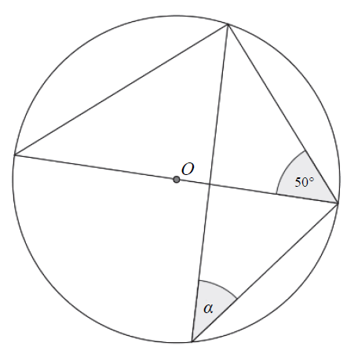

Matura 2015 sierpień
Wersję matury poprawkowej dla techników omówię na
stronie: matura-2015-sierpien-technikum.html.
Jeśli \(a=\frac{3}{2}\) i \(b=2\), to wartość wyrażenia \(\frac{a\cdot b}{a+b}\)
jest równa
A.\( \frac{2}{3} \)
B.\( 1 \)
C.\( \frac{6}{7} \)
D.\( \frac{27}{6} \)
C
Dany jest prostokąt o wymiarach \(40 \text{ cm} \times 100 \text{ cm}\). Jeżeli
każdy z dłuższych boków tego prostokąta wydłużymy o \(20\%\), a każdy z krótszych boków skrócimy o
\(20\%\), to w wyniku obu przekształceń pole tego prostokąta
A.zwiększy się o \( 8\% \)
B.zwiększy się o \( 4\% \)
C.zmniejszy się o \( 8\% \)
D.zmniejszy się o \( 4\% \)
D
Liczba \(\frac{9^5\cdot 5^9}{45^5}\) jest równa
A.\( 45^{40} \)
B.\( 45^9 \)
C.\( 9^4 \)
D.\( 5^4 \)
D
Liczba \(\sqrt{\frac{9}{7}}+\sqrt{\frac{7}{9}}\) jest równa
A.\( \sqrt{\frac{16}{63}} \)
B.\( \frac{16}{3\sqrt{7}} \)
C.\( 1 \)
D.\( \frac{3+\sqrt{7}}{3\sqrt{7}} \)
B
Wartość wyrażenia \(\log_50{,}04-\frac{1}{2}\log_{25}1\) jest równa
A.\( -3 \)
B.\( -2\frac{1}{4} \)
C.\( -2 \)
D.\( 0 \)
C
Wartość wyrażenia \((a+5)^2\) jest większa od wartości wyrażenia \((a^2+10a)\) o
A.\( 50 \)
B.\( 10 \)
C.\( 5 \)
D.\( 25 \)
D
Na jednym z poniższych rysunków przedstawiono interpretację geometryczną układu
równań \[\begin{cases} x+3y=-5 \\ 3x-2y=-4 \end{cases} \] Wskaż ten rysunek. 
A
Najmniejszą liczbą całkowitą spełniającą nierówność \(2(x − 2) \le 4(x −1)+1\) jest
A.\( -2 \)
B.\( -1 \)
C.\( 0 \)
D.\( 1 \)
C
Rozwiązaniem równania \(x^2(x +1) = x^2−8\) jest
A.\( -9 \)
B.\( -2 \)
C.\( 2 \)
D.\( 7 \)
B
Funkcja \(f\) jest określona wzorem \(f(x)=\frac{2x-8}{x}\) dla każdej liczby
rzeczywistej \(x \ne 0\). Wówczas wartość funkcji \(f(\sqrt{2})\) jest równa
A.\( 2-4\sqrt{2} \)
B.\( 1-2\sqrt{2} \)
C.\( 1+2\sqrt{2} \)
D.\( 2+4\sqrt{2} \)
A
Parabola o wierzchołku \(W = (−3, 5)\) i ramionach skierowanych w dół może być
wykresem funkcji określonej wzorem
A.\( y=2\cdot (x+3)^2+5 \)
B.\( y=-2\cdot (x-3)^2+5 \)
C.\( y=-2\cdot (x+3)^2+5 \)
D.\( y=-2\cdot (x-3)^2-5 \)
C
Wykres funkcji liniowej \(y = 2x − 3\) przecina oś \(Oy\) w punkcie o współrzędnych
A.\( (0,-3) \)
B.\( (-3,0) \)
C.\( (0,2) \)
D.\( (0,3) \)
A
Wierzchołek paraboli będącej wykresem funkcji kwadratowej \(y = f (x)\) ma
współrzędne \((2, 2)\). Wówczas wierzchołek paraboli będącej wykresem funkcji \(g(x) = f(x + 2)\) ma
współrzędne
A.\( (4,2) \)
B.\( (0,2) \)
C.\( (2,0) \)
D.\( (2,4) \)
B
Wszystkie dwucyfrowe liczby naturalne podzielne przez \(7\) tworzą rosnący ciąg
arytmetyczny. Dwunastym wyrazem tego ciągu jest liczba
A.\( 77 \)
B.\( 84 \)
C.\( 91 \)
D.\( 98 \)
C
Ciąg liczbowy określony jest wzorem \(a_n=\frac{2^n-1}{2^n+1}\), dla \(n\ge 1\).
Piąty wyraz tego ciągu jest równy
A.\( -1 \)
B.\( \frac{31}{33} \)
C.\( \frac{9}{11} \)
D.\( 1 \)
B
Sinus kąta ostrego \(\alpha \) jest równy \(\frac{3}{4}\). Wówczas
A.\( \cos \alpha =\frac{1}{4} \)
B.\( \cos \alpha =\frac{\sqrt{7}}{4} \)
C.\( \cos \alpha =\frac{7}{16} \)
D.\( \cos \alpha =\frac{\sqrt{13}}{16} \)
B
W trójkącie prostokątnym o długościach przyprostokątnych \(2\) i \(5\) cosinus
większego z kątów ostrych jest równy
A.\( \frac{5}{2} \)
B.\( \frac{2}{5} \)
C.\( \frac{2}{\sqrt{29}} \)
D.\( \frac{5}{\sqrt{29}} \)
C
Pole rombu o boku \(6\) i kącie rozwartym \(150^\circ \) jest równe
A.\( 18\sqrt{2} \)
B.\( 18 \)
C.\( 36\sqrt{2} \)
D.\( 36 \)
B
W okręgu o środku \(O\) dany jest kąt o mierze \(50^\circ \), zaznaczony na
rysunku.  Miara kąta oznaczonego na
rysunku literą \(\alpha \) jest równa
A.\( 40^\circ \)
B.\( 50^\circ \)
C.\( 20^\circ \)
D.\( 25^\circ \)
A
Współczynnik kierunkowy prostej, na której leżą punkty \(A = (−4,3)\) oraz \(B =
(8,7)\), jest równy
A.\( a=3 \)
B.\( a=-1 \)
C.\( a=\frac{5}{6} \)
D.\( a=\frac{1}{3} \)
D
Punkt \(S = (2,−5)\) jest środkiem odcinka \(AB\), gdzie \(A = (−4,3)\) i \(B =
(8,b)\). Wtedy
A.\( b=-13 \)
B.\( b=-2 \)
C.\( b=-1 \)
D.\( b=6 \)
A
Dany jest trójkąt prostokątny o długościach boków \(a, b, c\), gdzie \(a \lt b \lt
c\). Obracając ten trójkąt wokół prostej zawierającej dłuższą przyprostokątną o kąt \(360^\circ \)
otrzymujemy bryłę, której objętość jest równa
A.\( V=\frac{1}{3}a^2b\pi \)
B.\( V=a^2b\pi \)
C.\( V=\frac{1}{3}b^2a\pi \)
D.\( V=a^2\pi +\pi ac \)
A
Przekątna przekroju osiowego walca, którego promień podstawy jest równy \(4\) i
wysokość jest równa \(6,\) ma długość
A.\( \sqrt{10} \)
B.\( \sqrt{20} \)
C.\( \sqrt{52} \)
D.\( 10 \)
D
W grupie jest \(15\) kobiet i \(18\) mężczyzn. Losujemy jedną osobę z tej grupy.
Prawdopodobieństwo tego, że będzie to kobieta, jest równe
A.\( \frac{1}{15} \)
B.\( \frac{1}{33} \)
C.\( \frac{15}{33} \)
D.\( \frac{15}{18} \)
C
Ile jest wszystkich liczb czterocyfrowych, większych od \(3000\), utworzonych
wyłącznie z cyfr \(1, 2, 3\), przy założeniu, że cyfry mogą się powtarzać, ale nie wszystkie z tych
cyfr muszą być wykorzystane?
A.\( 3 \)
B.\( 6 \)
C.\( 9 \)
D.\( 27 \)
D
Rozwiąż równanie \(\frac{2x-4}{x}=\frac{x}{2x-4}\), gdzie \(x\ne 0\) i \(x\ne 2\).
\(x=\frac{4}{3}\) lub \(x=4\)
Mamy dwa pudełka: w pierwszym znajduje się \(6\) kul ponumerowanych kolejnymi
liczbami od \(1\) do \(6\), a w drugim – \(8\) kul ponumerowanych kolejnymi liczbami od \(1\) do
\(8\). Losujemy po jednej kuli z każdego pudełka i tworzymy liczbę dwucyfrową w ten sposób, że numer
kuli wylosowanej z pierwszego pudełka jest cyfrą dziesiątek, a numer kuli wylosowanej z drugiego –
cyfrą jedności tej liczby. Oblicz prawdopodobieństwo, że utworzona liczba jest podzielna przez
\(11\).
\(\frac{1}{8}\)
Rozwiąż nierówność \(20x \ge 4x^2 + 24\).
\(x\in \langle 2;3\rangle \)
Kąt \(\alpha \) jest ostry i spełnia równość \(\operatorname{tg} \alpha
+\frac{1}{\operatorname{tg} \alpha }=\frac{7}{2}\). Oblicz wartość wyrażenia \(\sin \alpha \cdot
\cos \alpha \).
\(\frac{2}{7}\)
Wykaż, że dla wszystkich nieujemnych liczb rzeczywistych \(x\), \(y\) prawdziwa
jest nierówność \(x^3 + y^3 \ge x^2y + xy^2\).
W prostokącie \(ABCD\) punkt \(P\) jest środkiem boku \(BC\), a punkt \(R\) jest
środkiem boku \(CD\). Wykaż, że pole trójkąta \(APR\) jest równe sumie pól trójkątów \(ADR\) oraz
\(PCR\). 
Wyznacz równanie osi symetrii trójkąta o wierzchołkach \(A = (−2, 2)\), \(B = (6, −
2)\), \(C = (10,6)\).
\(y=-3x+16\)
Podstawą ostrosłupa \(ABCDS\) jest prostokąt, którego boki pozostają w stosunku \(3
: 4\), a pole jest równe \(192\) (zobacz rysunek). Punkt \(E\) jest wyznaczony przez przecinające
się przekątne podstawy, a odcinek \(SE\) jest wysokością ostrosłupa. Każda krawędź boczna tego
ostrosłupa jest nachylona do płaszczyzny podstawy pod kątem \(30^\circ\). Oblicz objętość
ostrosłupa. 
\(V=\frac{640\sqrt{3}}{3}\)
Funkcja kwadratowa \(f\) określona jest wzorem \(f(x) = ax^2 + bx + c\). Zbiorem
rozwiązań nierówności \(f(x) \gt 0\) jest przedział \((0,12)\). Największa wartość funkcji
\(f\) jest równa \(9\). Oblicz współczynniki \(a\), \(b\) i \(c\) funkcji \(f\).
\(a=-\frac{1}{4}\), \(b=3\), \(c=0\)